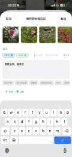
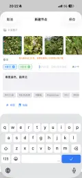

Dans l’article précédent, nous avons expliqué pourquoi enregistrer. Ici, l’objectif est pratique: créer un nouveau nœud de bout en bout.
Le flux de création dans Snapline Diary est déjà simple. Ce guide le déroule entièrement pour clarifier chaque étape.
Vous pouvez commencer depuis:
Chemins différents, même résultat: dans les deux cas, un nœud est créé puis ajouté à la chronologie de l’accueil.
Astuce: l’extension de partage accepte actuellement les images uniquement. Si votre sélection inclut une vidéo, Snapline Diary peut ne pas apparaître. Sélectionnez uniquement des images puis partagez à nouveau.
En pratique, ajouter les photos d’abord puis écrire la note est plus fluide. Vous pouvez continuer à ajouter des photos, et la bande de miniatures permet de vérifier rapidement le contenu déjà collecté.
La bande d’images prend en charge le glisser-déposer. La première image devient la couverture.
Avec plusieurs images dans un nœud, placez la plus représentative en premier pour mieux la reconnaître sur l’accueil.
🎯 et ✈️);L’objectif est la robustesse: capturer, relire et revenir à la source.
Deux méthodes:
Astuce: inutile de saisir
#. Tapez le mot du tag puis espace ou entrée pour générer la pastille colorée.
Les recommandations se basent sur les mots-clés de la note en cours et sur votre historique de tags.
Ces deux boutons réduisent la friction dans les scénarios de capture rapide.
Après sauvegarde, le nœud est écrit en local et apparaît immédiatement sur l’accueil (généralement en haut du groupe du jour).
Les nœuds créés via partage et via + accueil sont unifiés dans une seule chronologie.
On passe de «vu» à «capturé avec preuve».

Ensuite, vous relisez soit par temps (accueil), soit par thème (tags).

Le cœur n’est pas «un écran de saisie en plus», mais un flux stable:
Capturer via deux entrées → choisir photos et couverture → écrire note et liens → ajouter tags et recommandations → sauvegarder dans la chronologie.